OPEN ECONOMY
International Trade, Capital Flows, and Exchange Rates
Why Does International Trade Occur?
Trade connects different nations globally, allowing them to exchange goods, services, and capital. Economists have developed multiple theories to explain the underlying logic of why countries trade with one another.
Ricardo
Even if one country is more efficient at producing absolutely everything, trade still generates mutual benefits if nations specialize according to their comparative advantage.
Example: Portugal exports wine, while England exports cloth.
Heckscher-Ohlin
Countries trade because they have different factor endowments. Some are relatively rich in labour, while others have abundant capital or natural resources.
Example: Australia exports minerals, while Bangladesh exports garments.
Krugman
Countries may trade heavily even when they are fundamentally similar. This happens because specialization lowers average costs via economies of scale, and consumers inherently value product variety.
Example: Germany and France both manufacture and trade cars with each other.
Melitz
Trade patterns are highly dependent on the productivity differences across individual firms within the exact same industry. Only the most robust firms participate in trade.
Example: Only highly productive Czech machinery firms export; smaller ones only sell locally.
Financial Openness and National Income
In addition to goods and services, open economies also actively trade financial assets. Domestic residents can purchase foreign assets, and similarly, foreigners can invest in domestic ones.
We define the Net Capital Outflow ($NCO$) as the difference between domestic purchases of foreign assets and foreign purchases of domestic assets.
- If $\mathbf{NCO > 0}$: The country is a net lender to the rest of the world (ROW).
- If $\mathbf{NCO < 0}$: The country is a net borrower from the rest of the world.
National Income Accounting in an Open Economy
To understand the flow of money, we look at the expenditure components of the GDP.
Closed Economy
Expenditure consists only of domestic consumption, investment, and government purchases.
Open Economy
We must include Net Exports ($NX = X - IM$) because part of domestic production is sold abroad, and domestic expenditure may fall on foreign goods.
The Fundamental Identity: Trade Balance and Capital Flows
By rearranging the open economy expenditure equation, we get $NX = Y - (C + I + G)$. Knowing that national saving is defined as $S = Y - C - G$, we arrive at the pivotal identity linking trade and capital flows:
Because the national income accounting implies $NCO = NX = S - I$, we can conclude:
- A trade deficit ($NX < 0$) is entirely financed by net capital inflows ($S < I$). The country borrows from abroad.
- A trade surplus ($NX > 0$) directly corresponds to net capital outflows ($S > I$). The excess saving is lent abroad.
The Small Open Economy Model (SOE)
To analyze the impact of different policies, we use the classical long-run small open economy model, where output is firmly fixed at full employment ($Y = \bar{Y} = F(\bar{K}, \bar{L})$).
Let us establish our behavioral equations:
- Consumption depends on disposable income: $C = C(Y - T)$
- Investment is a function of the real interest rate: $I = I(r^*)$
Implications for Net Exports
Since the interest rate is fixed at the global level ($r^*$), investment is fully determined: $I = I(r^*)$. Thus, the trade balance becomes a direct function of domestic savings and world investment rates:
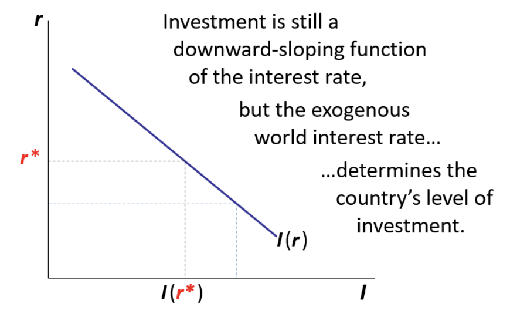
Adjustment Mechanisms: Closed vs. Open Economy
Adjustment in a Closed Economy
In a closed system, the domestic interest rate $r$ continuously adjusts to ensure that investment exactly matches national savings ($S = I$).
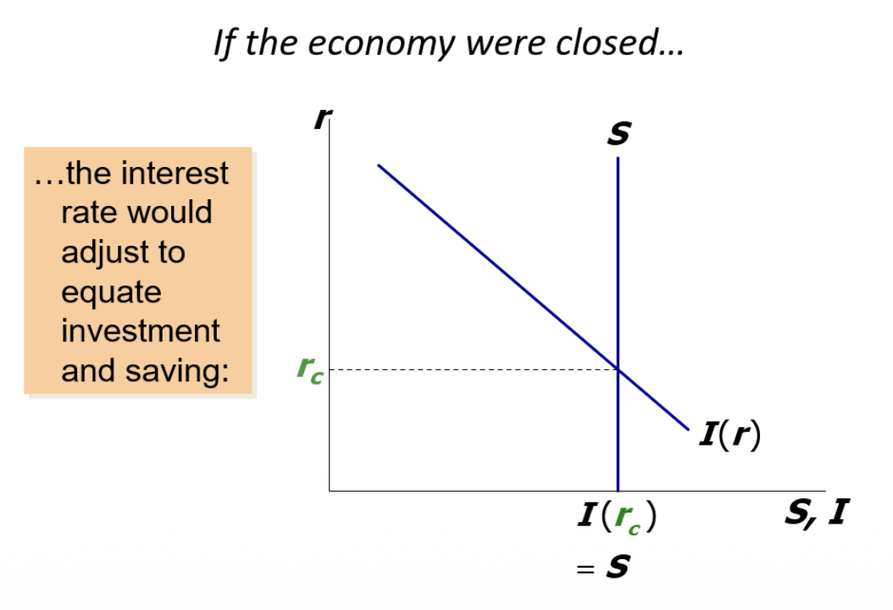
Adjustment in an Open Economy
In an open system, $r$ is pinned by $r^*$. Therefore, savings need NOT equal investment. If $S > I$, the gap forms the trade surplus (Net Exports). If $S < I$, it creates a deficit.
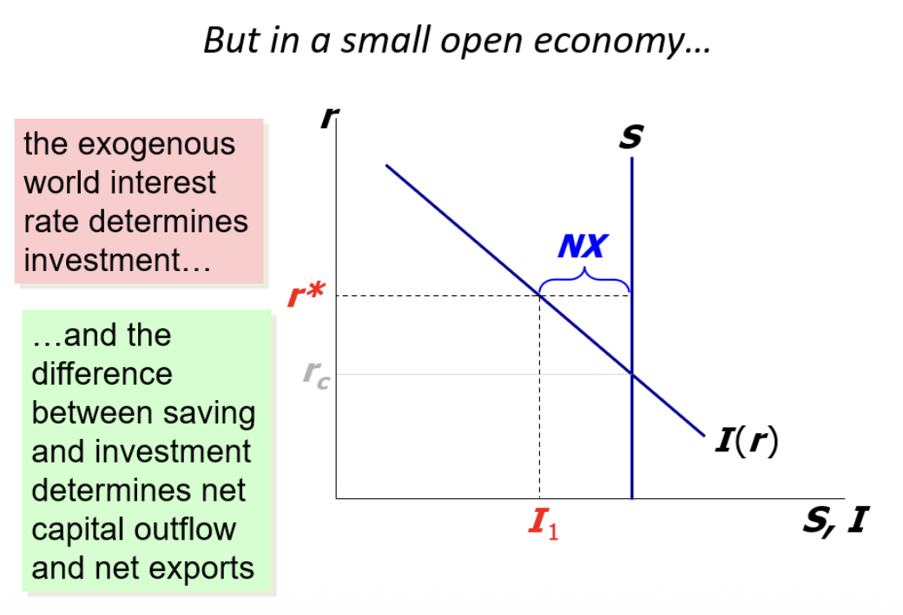
Policy Shocks and the Trade Balance
How do various policy measures affect the trade balance? We will observe three straightforward scenarios, leveraging our core framework.
An expansionary domestic fiscal policy, such as increasing government purchases ($G \uparrow$) or cutting taxes ($T \downarrow$), heavily reduces national saving ($S \downarrow$).
Since $NX = S \downarrow - I$, net exports must fall. The economy reduces its foreign lending and might even move to a trade deficit.
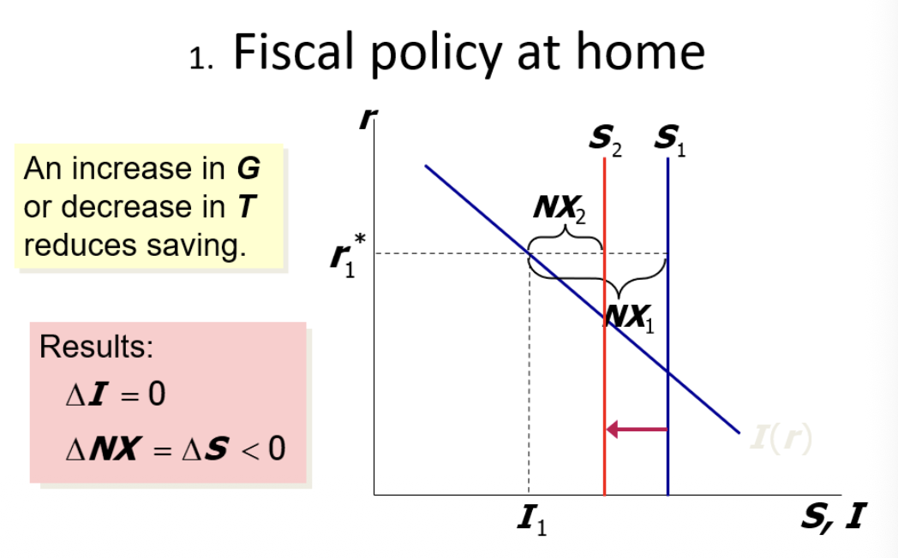
If large foreign economies conduct a fiscal expansion, global savings heavily drop, pushing the world interest rate upwards ($r^* \uparrow$).
A higher $r^*$ suppresses domestic investment ($I \downarrow$). With investment down and savings unchanged, the difference $S - I \uparrow$ grows, leading to a rise in Net Exports ($NX \uparrow$).
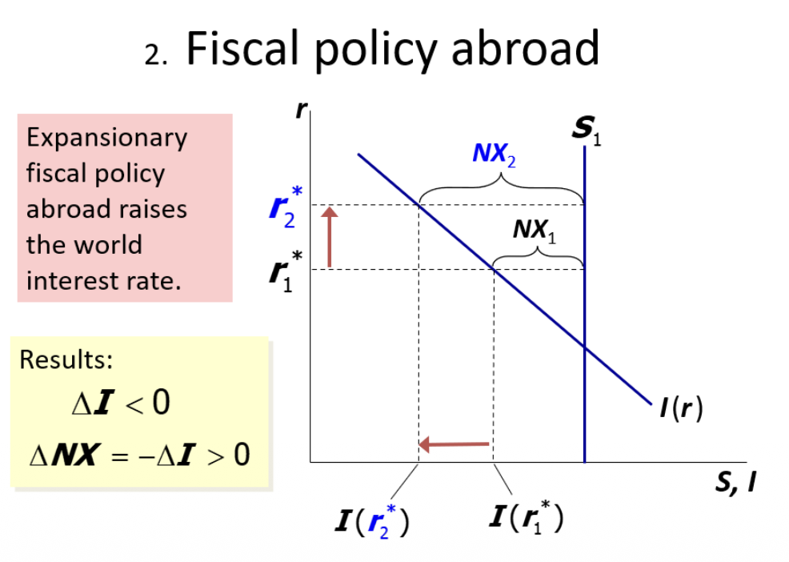
If the government implements an investment tax credit or firms suddenly become very optimistic, investment demand jumps ($I_0 \uparrow$). At the fixed $r^*$, total investment surges ($I \uparrow$).
Because savings are unchanged, the surge in investment causes $S - I \downarrow$, generating a dramatic fall in NX, and leading to borrowing from abroad.
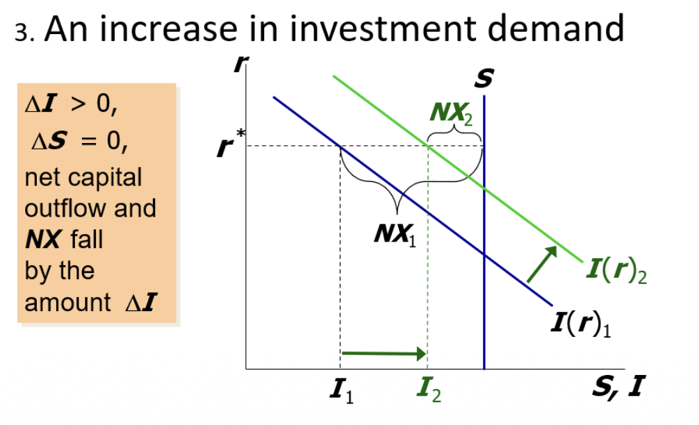
Exchange Rates and Purchasing Power Parity
Nominal Exchange Rate (E)
It represents the price of a foreign currency. Measured as units of domestic currency per unit of foreign currency.
Example: $E = 20.80$ CZK/USD means that one physical U.S. dollar costs precisely 20.80 Czech koruna.
Real Exchange Rate ($\epsilon$)
The RER measures the relative price of foreign goods in terms of domestic goods. It tells us the true purchasing power.
Real Exchange Rate Example: The Big Mac Index
Suppose a Big Mac in Prague costs $P = 115$ CZK, and in New York it costs $P^* = 6.72$ USD. The nominal rate is $E = 20.80$ CZK/USD.
The real exchange rate is: $\epsilon = 20.80 \times \frac{6.72}{115} \approx 1.21$
This strictly dictates that the U.S. Big Mac is approximately 21% more expensive than the Czech Big Mac in real terms.
Arbitrage and The Law of One Price
If there's a significant price gap for identical products across different markets, it inherently creates an arbitrage opportunity. This mechanism drives the principle of Purchasing Power Parity (PPP).
- The Law of One Price (LOOP): Over the long term, avoiding arbitrage guarantees identical goods must cost the exact same amount globally.
- Why does PPP fail? Goods are not always perfect substitutes. Moreover, transaction costs, prohibitive tariffs, different national tastes, and the presence of nontradables drastically impede perfect parity.
The Balassa-Samuelson Effect
One structural reason PPP persistently fails is due to cross-country differences in labor productivity. The Balassa-Samuelson effect demonstrates why wealthier, highly productive countries naturally have higher overarching price levels.
Tradables
Goods capable of international trade (cars, steel, machinery). Their domestic prices are firmly constrained by intense global competition.
Nontradables
Services consumed specifically where they are produced (haircuts, rent, restaurants). Prices are dictated exclusively by domestic factors and local wages.
Imagine a rapidly developing economy:
- Productivity Surge: Sectoral productivity within the tradable sector ($A_T$) suddenly rises rapidly.
- Wage Hike in Tradables: Generating immense value, these firms can heavily increase their worker wages.
- Wage Spillover: To prevent extreme labor shortages, nontradable sectors (like a barber shop) are overwhelmingly pressured to match those higher wages.
- Price Inflation in Nontradables: Because the barber’s intrinsic productivity ($A_N$) did not grow, his unit labor costs inherently spike. He is forced to raise absolute prices ($P_N \uparrow$) just to survive.
- Aggregate Effect: This directly inflates the overall domestic price level. Therefore, rich, fast-growing economies experience chronic Real Exchange Rate appreciation.
A Parallel Concept: Dutch Disease. While identical in mechanics (pushing up nontradable prices and soaring exchange rates), Dutch Disease stems specifically from a colossal boom in natural resources (like an oil discovery) rather than general manufacturing productivity.
NX, Exchange Rates & The Macro Synthesis
The net exports function deeply reflects an inverse relationship with the real exchange rate. If the exchange rate rises, foreign goods become relatively expensive, boosting NX.
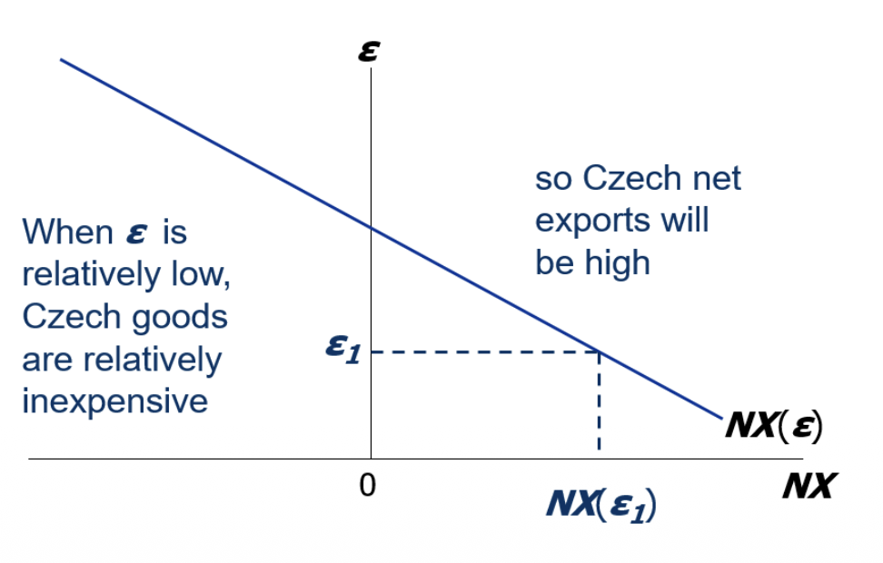
Net Exports and $\epsilon$
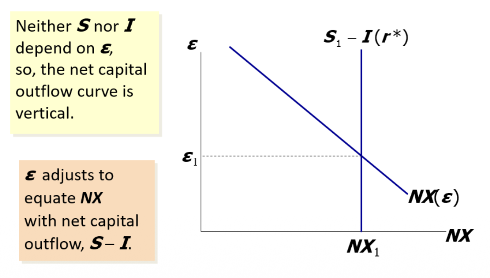
NX and the Saving/Investment Identity
Graphical Impacts of Shocks in the Open Economy Model
Let's map out exactly how distinct macroeconomic shocks deform our $S-I$ balance and thus deeply affect our exchange rate equilibrium.
Fiscal Expansion at Home
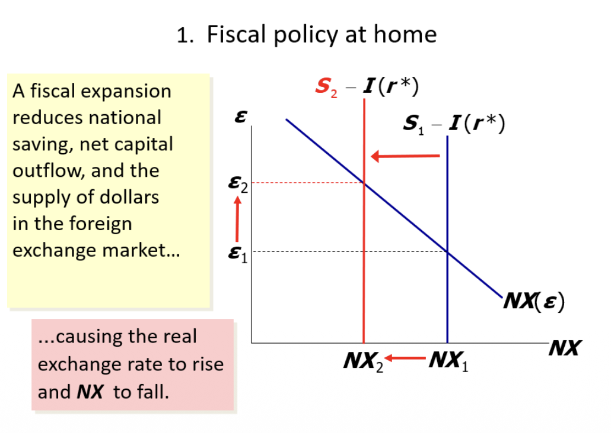
$S$ shifts left. Trade balance severely drops, causing $\epsilon$ to drastically appreciate.
Fiscal Expansion Abroad
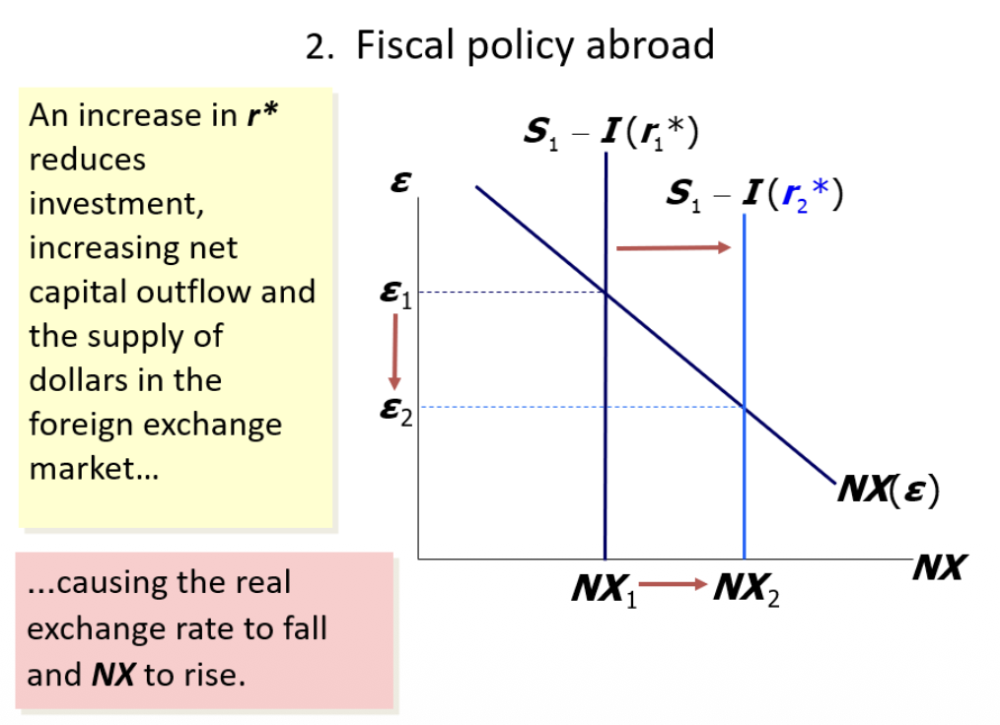
$r^*$ rises, causing domestic $I$ to drop. The $S-I$ gap swells, sending NX higher and $\epsilon$ sharply plummets.
Rise in Investment Demand
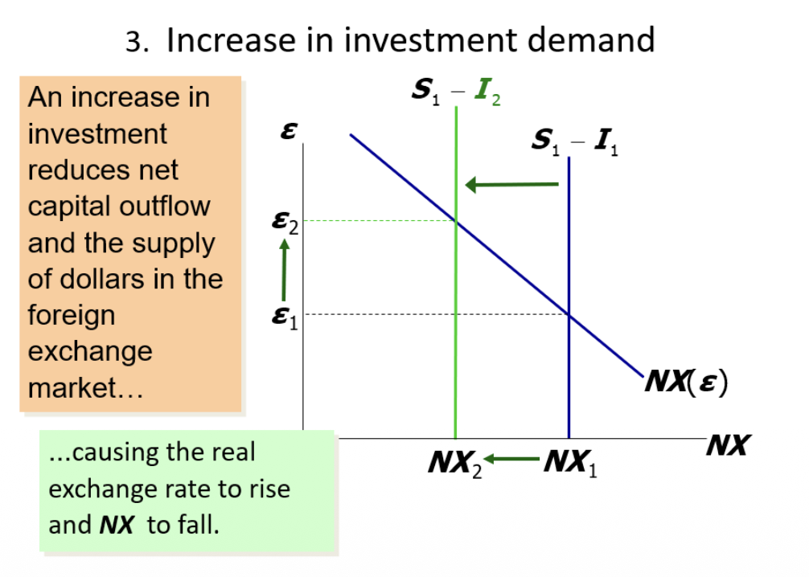
Increased $I$ shifts the $S-I$ supply curve violently leftward. $\epsilon$ heavily appreciates.
Trade Policy Restriction
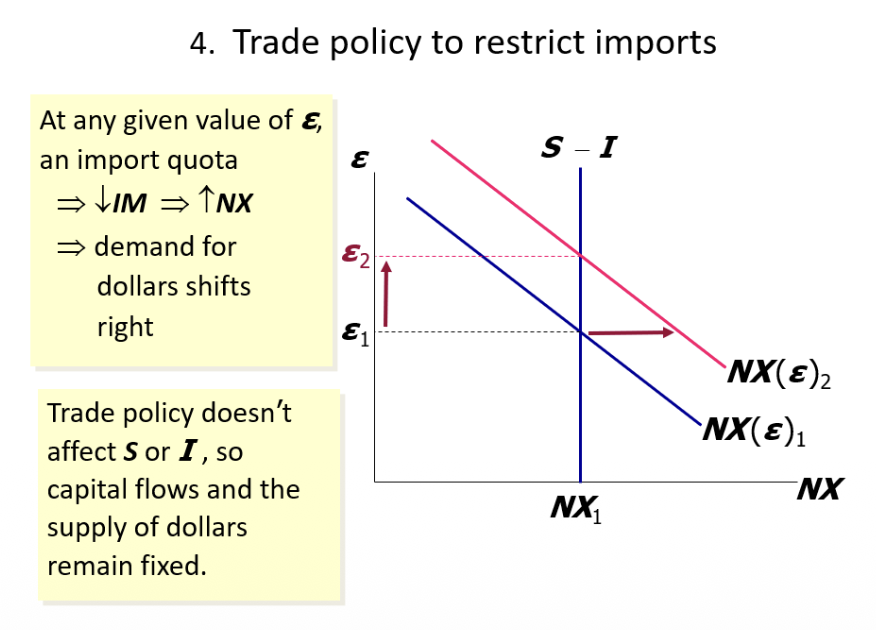
A tariff organically shifts the NX curve upward. While $\epsilon$ artificially appreciates, total true NX unexpectedly remains totally unaffected due to rigid $S-I$.
Key Takeaways
- Small Open Economy Core Identity: The crucial engine driving our model rests entirely on $NX = S - I$. Trade imbalances are fundamentally born from capital flow variations.
- Perfect Mobility: With frictionless capital flow, a Small Open Economy possesses absolutely zero gravitational pull over the world real interest rate ($r^*$). Therefore, domestic investment strictly mirrors global credit conditions.
- Price Structural Gaps: Persistent real-world deviations from basic Purchasing Power Parity (PPP), illustrated precisely by the potent Balassa-Samuelson Effect, structurally explain why high-growth domains suffer relentless inflationary bursts in nontradable sectors.
End of Lecture — The Open Economy. Utilizing B2 English level pedagogy.